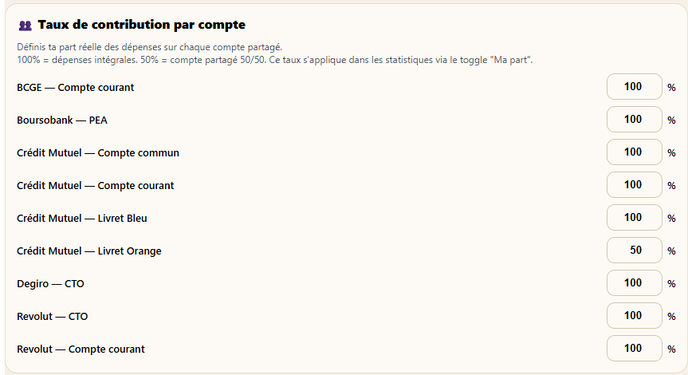
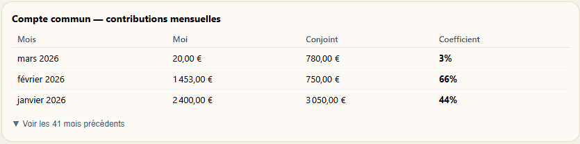
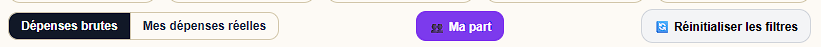

Vous partagez un compte avec votre conjoint(e) ? Stateri calcule automatiquement votre taux de contribution réel mois par mois — et isole votre part dans toutes les statistiques, sans double comptage.

Dans les paramètres, chaque compte bancaire dispose d'un taux de contribution — le pourcentage des dépenses de ce compte qui vous appartient réellement. Par défaut : 100 %.
Pour les comptes communs, Stateri peut calculer automatiquement votre taux de contribution en analysant les virements entrants — celui qui a versé le plus contribue proportionnellement plus.
Stateri analyse les virements entrants sur le compte commun et calcule le coefficient de chaque personne mois par mois.
Exemple : vous virez 700 € et votre conjoint(e) 300 € → votre taux = 70 %, le leur = 30 %. Ce coefficient varie chaque mois selon la réalité des virements.
Vous préférez un taux fixe ? Saisissez directement le pourcentage qui vous correspond dans les paramètres.
Il reste stable jusqu'à ce que vous le modifiiez — idéal si votre contribution est toujours la même quelle que soit le mois.

Pour chaque mois, Stateri affiche ce que vous avez versé (Moi), ce que votre conjoint(e) a versé (Conjoint), et le coefficient qui en résulte.
Ici : en janvier 2026, vous avez versé 2 400 € vs 3 050 € → coefficient de 44 %. En février : 1 453 € vs 750 € → 66 %. Le coefficient reflète fidèlement la réalité de chaque mois.

Dans l'onglet Historique, trois boutons permettent de basculer instantanément entre trois lectures de votre budget :
Stateri suit les remboursements entre personnes et tient à jour une balance par personne. En un coup d'œil, vous savez combien vous est dû, combien vous devez, et quel est le solde net.
Total des montants que d'autres personnes vous doivent, sur la base des remboursements enregistrés dans vos transactions.
Total des montants que vous devez à d'autres — dépenses avancées par un ami, remboursements en attente, partage de frais non soldé.
Pour chaque personne de votre entourage, Stateri affiche une balance claire : positif = on vous doit, négatif = vous devez. Fini les calculs à la main.